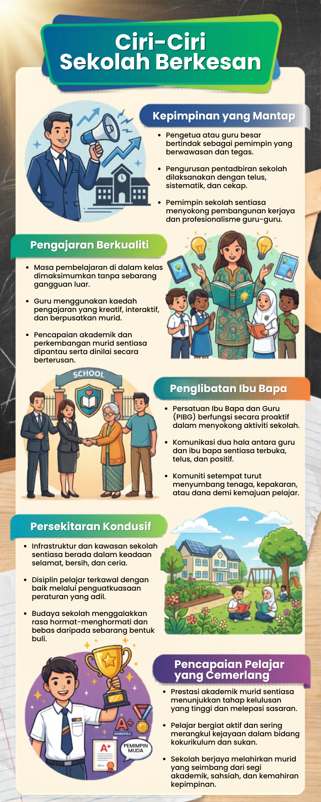
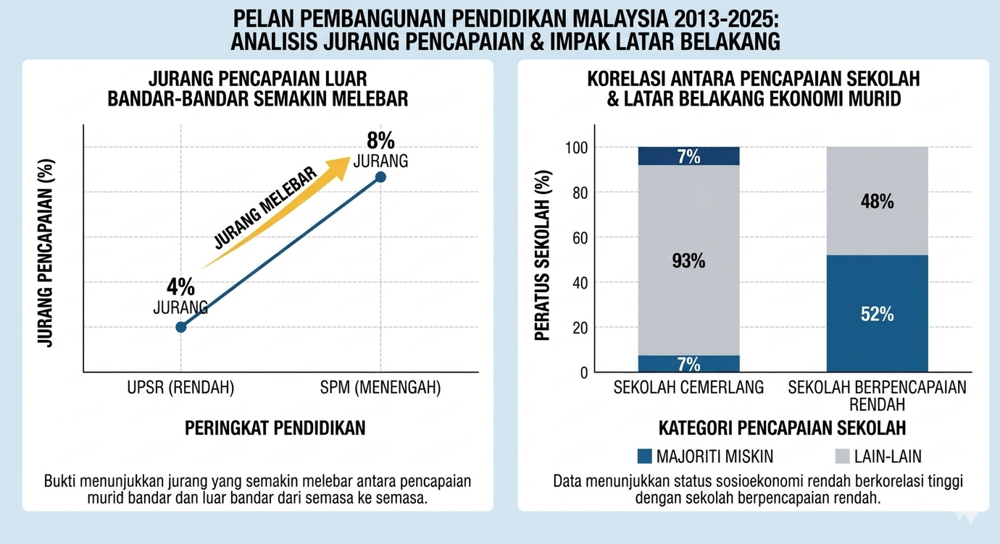
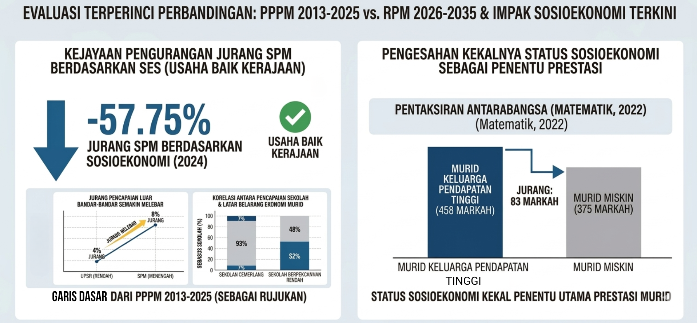

Tugasan 2 - PENGHASILAN PRODUK

CHING.H.Y
Biodata Pelajar
Pengenalan
1.0 Pengenalan
Stratifikasi sosial merupakan satu fenomena yang merujuk kepada perbezaan kedudukan atau kelas sosial dalam masyarakat yang sering menjadi cabaran besar dalam dunia pendidikan. Secara umumnya, jurang sosioekonomi antara murid sering dilihat sebagai faktor utama yang membezakan tahap pencapaian akademik mereka di sekolah. Pelan Pembangunan Pendidikan Malaysia (PPPM) 2013-2025 telah menentukan bahawa salah satu aspirasi utama negara adalah merapatkan jurang pencapaian antara murid bandar dan luar bandar serta murid daripada pelbagai latar belakang sosioekonomi. Walau bagaimanapun, kesan negatif stratifikasi sosial ini sebenarnya boleh dikurangkan melalui pembentukan budaya sekolah yang positif. Budaya sekolah yang harmoni dan berkesan bukan sahaja mampu merapatkan jurang pendidikan, malah menjadi pemangkin kepada kecemerlangan murid. Dalam hal ini, guru memegang peranan yang sangat penting sebagai pembina sosial atau agen pengubah yang membentuk persekitaran pembelajaran yang adil dan menyokong pencapaian akademik yang cemerlang bagi setiap murid.
Infografik
2.0 Ciri-Ciri Sekolah Berkesan

Peranan Budaya Sekolah
3.0 Peranan Budaya Sekolah Positif Dalam Meminimumkan Kesan Stratifikasi Sosial
3.1 Budaya Inklusif
Budaya sekolah yang positif berupaya meminimumkan kesan negatif stratifikasi sosial menerusi amalan inklusiviti dalam perkongsian sumber pendidikan. Hal ini sangat penting kerana sekolah bertindak sebagai agen perantara yang merapatkan jurang antara murid kaya dengan murid miskin (Sharifah Md Nor, 2000). Dalam konteks ini, budaya sekolah yang positif hendaklah mewujudkan persekitaran yang memastikan setiap murid mendapat akses kepada infrastruktur digital dan bahan rujukan yang berkualiti tanpa mengira latar belakang sosioekonomi keluarga mereka. Inisiatif ini sangat selari dengan aspirasi dalam Rancangan Pendidikan Malaysia 2026-2035 yang menyasarkan pengurangan sebanyak 70% dalam jurang pencapaian sosioekonomi (KPM, 2026). Melalui pemantapan infrastruktur fizikal dan digital di bawah Teras Strategik 4, sekolah boleh menyediakan kemudahan peranti dan pusat sumber yang lengkap untuk kegunaan murid daripada golongan kurang berkemampuan secara percuma. Keberhasilan sistem pendidikan yang memberikan peluang setara ini membolehkan murid yang kekurangan sumber di rumah tetap dapat bersaing secara adil di sekolah (Chong et al., 2019). Dengan ini, kekangan kewangan tidak lagi menjadi penghalang utama kepada pencapaian akademik murid.
3.2 Budaya Harapan Tinggi
Selain sokongan sumber, penerapan budaya harapan tinggi dalam kalangan warga pendidik merupakan kunci utama untuk menangani kesan psikologi akibat perbezaan status sosial. Sekolah yang mempunyai budaya positif akan sentiasa memupuk kepercayaan bahawa setiap murid mempunyai potensi besar untuk berjaya. Pendekatan ini secara saintifiknya dikenali sebagai kesan Pygmalion yang membuktikan bahawa jangkaan positif guru akan memacu peningkatan prestasi murid secara nyata (Rosenthal & Jacobson, 1968). Dalam kerangka pembangunan modal insan, usaha ini sangat bertepatan dengan matlamat untuk melahirkan murid yang mempunyai ciri berkeyakinan dan berdaya tahan (KPM, 2026). Guru yang meletakkan harapan tinggi tanpa berat sebelah terhadap murid daripada kelas bawahan akan membantu mereka membina kepercayaan diri yang utuh (Bourdieu & Passeron, 1977). Apabila murid merasa dihargai dan dipercayai, mereka akan berusaha lebih gigih untuk mencapai keputusan cemerlang sekali gus menghapuskan perasaan rendah diri yang sering membelenggu murid daripada keluarga miskin. Kesimpulannya, gabungan antara kesaksamaan sumber dan sokongan emosi yang kuat melalui budaya sekolah mampu mengurangkan impak negatif stratifikasi sosial secara menyeluruh.
Agen Pengubah
4.0 Peranan Guru Sebagai Agen Pengubah
4.1 Guru Sebagai Pembina Hubungan Positif dan Kepercayaan
Guru memainkan peranan yang amat penting sebagai pembina hubungan positif dan kepercayaan terhadap murid. Peranan ini bukan sekadar bersifat sokongan, malah terbukti menjadi faktor penentu kepada kejayaan akademik murid, terutamanya mereka yang datang daripada latar belakang sosioekonomi rendah. Hal ini demikian kerana murid daripada keluarga miskin sering kali berasa rendah diri dan kurang yakin untuk melibatkan diri secara aktif dalam proses pembelajaran. Justeru, guru perlu mengambil inisiatif untuk mendekati murid, mendengar keluh kesah mereka dan menunjukkan keprihatinan yang tulus. Apabila hubungan yang positif berjaya dibina, murid akan berasa selamat, dihargai dan seterusnya lebih terbuka untuk menerima ilmu yang disampaikan.
Kepentingan peranan ini turut disokong oleh bukti empirikal yang kukuh. Menurut meta-analisis yang dilakukan oleh Hattie (2012), hubungan guru dan murid mempunyai kesan yang sangat besar terhadap pencapaian akademik dengan nilai kesan d=0.72. Nilai ini jauh melebihi purata kesan kebanyakan intervensi pendidikan yang lain. Dalam konteks yang sama, kajian klasik oleh Rosenthal dan Jacobson (1968) tentang kesan Pygmalion membuktikan bahawa apabila guru meletakkan harapan tinggi dan menunjukkan kepercayaan kepada murid, prestasi murid akan meningkat secara nyata. Tanpa hubungan yang positif, murid daripada keluarga kurang berkemampuan cenderung berasa terpinggir dan kehilangan motivasi untuk belajar.
4.2 Guru Sebagai Pelaksana Pedagogi Adil dan Inklusif
Selain itu, guru juga bertindak sebagai pelaksana pedagogi yang adil dan inklusif bagi memastikan setiap murid mendapat peluang yang sama tanpa mengira latar belakang sosioekonomi. Peranan ini amat penting kerana bilik darjah merupakan ruang utama di mana budaya sekolah diterjemahkan kepada pengalaman pembelajaran yang sebenar. Guru perlu mengamalkan pengajaran berdiferensiasi seperti yang ditekankan oleh Tomlinson (2014) yang menyatakan bahawa tanpa pendekatan ini, murid daripada pelbagai latar belakang tidak akan dapat mengakses kurikulum secara bermakna. Oleh itu, guru perlu mengelakkan berat sebelah tersembunyi yang sering menyebabkan murid miskin kurang mendapat perhatian dan peluang untuk menyumbang di dalam kelas.
Kepentingan peranan ini turut dibuktikan oleh data antarabangsa daripada PISA 2022 yang dikeluarkan oleh OECD (2023). Data tersebut menunjukkan bahawa di sekolah yang mempunyai guru dengan harapan tinggi terhadap semua murid, murid daripada keluarga berpendapatan rendah mencapai skor matematik yang lebih tinggi sebanyak 30 hingga 40 mata berbanding murid miskin di sekolah yang kurang mempunyai sokongan tersebut. Dalam konteks Malaysia, Rancangan Pendidikan Malaysia 2026-2035 turut mengiktiraf bahawa pembangunan profesional guru dalam pedagogi yang berpaksikan keadilan adalah salah satu teras strategik untuk mengurangkan jurang pencapaian berdasarkan sosioekonomi. Tanpa guru yang melaksanakan pedagogi adil dan inklusif, budaya sekolah yang positif tidak akan sampai ke bilik darjah dan gagal memberi impak yang bermakna kepada murid yang memerlukan.
4.3 Guru Sebagai Pemimpin dan Pembentuk Norma Sekolah
Selain daripada bilik darjah, guru juga bertindak sebagai pemimpin dan pembentuk norma sekolah secara menyeluruh. Peranan ini melangkaui pengajaran kerana guru menjadi teladan yang menunjukkan nilai-nilai positif seperti disiplin, tanggungjawab dan keprihatinan melalui tingkah laku seharian. Guru juga terlibat secara aktif dalam aktiviti kurikulum dan kokurikulum serta bekerjasama dengan pentadbir, ibu bapa dan komuniti untuk membentuk persekitaran sekolah yang kondusif. Tanpa penglibatan guru dalam aspek kepimpinan ini, budaya sekolah yang positif tidak akan dapat diterjemahkan secara konsisten di semua peringkat.
Kepentingan peranan ini disokong oleh tokoh pendidikan antarabangsa, Fullan (2014), yang menegaskan bahawa guru dan pemimpin sekolah merupakan agen perubahan yang paling utama dalam sistem pendidikan. Menurut Fullan (2014), transformasi sekolah hanya berjaya apabila guru memainkan peranan aktif sebagai pemimpin yang membentuk norma dan nilai institusi. Dalam konteks Malaysia, laporan Sinar bestari (2024, Oktober 10) mengenai amalan di SMK Kota Masai, Johor, menunjukkan bahawa guru diiktiraf sebagai agen perubahan yang menerajui budaya cemerlang sekolah melalui komitmen mereka dalam membimbing sahsiah dan akademik murid. Selain itu, Rancangan Pendidikan Malaysia 2026-2035 turut menekankan bahawa pemerkasaan guru sebagai pemimpin sekolah adalah strategi utama untuk mencapai kecemerlangan sistem pendidikan. Justeru, tanpa guru sebagai pemimpin dan pembentuk norma, budaya sekolah yang positif tidak akan terbentuk secara menyeluruh dan berterusan.
Cadangan Intervensi
5.0 Cadangan Intervensi Dan Langkah Penambahbaikan Strategik
Bagi memantapkan peranan guru serta budaya sekolah secara holistik, beberapa cadangan intervensi yang praktikal dan berfokus perlu dilaksanakan segera. Langkah pertama melibatkan pewujudan Dana Ekuiti Pendidikan di peringkat sekolah untuk membekalkan sumber pembelajaran secara percuma kepada murid yang kurang berkemampuan. Intervensi ini sangat bertepatan dengan matlamat Pelan Pembangunan Pendidikan Malaysia 2013 hingga 2025 yang memberikan penekanan khusus terhadap usaha merapatkan jurang sosioekonomi dalam pendidikan. Melalui mekanisme penyediaan peranti digital dan bahan rujukan, masalah keciciran akibat kemiskinan dapat diatasi secara proaktif. Perkara ini terbukti relevan kerana kajian oleh Chong et al. (2019) menegaskan bahawa ketersediaan infrastruktur fizikal yang lengkap di persekitaran murid merupakan prasyarat utama untuk meningkatkan pencapaian akademik golongan yang berpendapatan rendah.
Seterusnya, pihak pengurusan sekolah hendaklah merangka Program Pembudayaan Akademik bagi menangani isu ketidaksamaan modal budaya secara akar umbi. Berdasarkan pandangan kritis melalui Teori Modal Budaya oleh Bourdieu dan Passeron (1977), murid daripada latar belakang keluarga miskin sering ketinggalan kerana tidak didedahkan kepada gaya pemikiran masyarakat terpelajar sejak awal. Oleh itu, intervensi ini menuntut warga pendidik untuk mengendalikan sesi pementoran khas yang mendedahkan murid rentan kepada wacana intelek serta kemahiran komunikasi aras tinggi. Melalui pendedahan persekitaran baharu ini, murid secara beransur-ansur akan menyerap nilai budaya sekolah yang dominan lalu membina keyakinan diri yang utuh. Langkah strategik ini secara langsung berjaya merombak tembok stratifikasi sosial yang selama ini mengekang keupayaan sebenar mereka.
Akhir sekali, pemerkasaan kompetensi pedagogi guru mesti dijadikan agenda utama yang melangkaui corak latihan konvensional sedia ada. Pihak pentadbir perlu mempergiatkan kursus pembangunan profesional yang memfokuskan kemahiran intervensi sosioemosi dan pengajaran berbeza. Langkah penambahbaikan proaktif ini amat selari dengan teras utama Rancangan Pendidikan Malaysia 2026 hingga 2035 yang bermatlamat teguh untuk membina ekosistem pendidikan yang berdaya tahan terhadap cabaran masa hadapan. Apabila guru sentiasa dilengkapi dengan kemahiran psikologi yang mantap, mereka pasti mampu menguruskan bilik darjah secara saksama tanpa meminggirkan mana-mana darjat sosial. Kesimpulannya, kesepaduan pelaksanaan intervensi material dan pemantapan kualiti pengajaran ini akan menjamin kelestarian kecemerlangan akademik bagi setiap murid.
Kesimpulan
6.0 Kesimpulan
Secara keseluruhannya, stratifikasi sosial memang menimbulkan cabaran besar terhadap pencapaian akademik murid. Walau bagaimanapun, budaya sekolah yang positif mampu meminimumkan kesan negatif tersebut melalui amalan inklusif dan harapan tinggi terhadap semua murid. Dalam usaha membentuk budaya ini, guru memainkan peranan yang amat penting sebagai agen pengubah. Guru bukan sahaja membina hubungan positif dan kepercayaan, malah melaksanakan pedagogi yang adil serta menjadi pemimpin yang membentuk norma sekolah. Dengan sokongan daripada dasar pendidikan seperti Rancangan Pendidikan Malaysia 2026–2035, peranan guru perlu terus diperkukuhkan bagi memastikan setiap murid, tanpa mengira latar belakang sosioekonomi, berpeluang untuk mencapai kecemerlangan akademik.
Rujukan
https://archive.org/details/reproductionined0000bour/
https://juku.um.edu.my/article/view/19294
https://archive.org/details/principalthreeke0000full
https://archive.org/details/visiblelearningf0000hatt
https://doi.org/10.1787/53f23881-en
https://gwern.net/doc/statistics/bias/1968-rosenthal-pygmalionintheclassroom.pdf
http://psasir.upm.edu.my/id/eprint/40372/
https://sinarbestari.sinarharian.com.my/sekolah-menengah/pendidik-fokus-terajui-budaya-cemerlang-pelajar-di-sekolah
https://www.perlego.com/book/3292625/the-differentiated-classroom-responding-to-the-needs-of-all-learners-pdf
Maklumat Tambahan
Kesan Stratifikasi Sosial Terhadap Pencapaian Akademik Murid
Pertama sekali, stratifikasi sosial yang berasaskan status sosioekonomi keluarga merupakan faktor utama yang mewujudkan jurang pencapaian akademik murid di sekolah. Murid daripada keluarga berpendapatan rendah sering berhadapan dengan masalah kekurangan sumber pendidikan seperti buku rujukan dan peranti digital. Menurut kajian oleh Chong et al. (2019), masalah kewangan ibu bapa berkait rapat dengan tahap pencapaian murid kerana mereka tidak mampu menyediakan persekitaran pembelajaran yang selesa di rumah. Keadaan ini menyebabkan murid tersebut terpinggir dalam arus pembelajaran berbanding rakan mereka yang lebih berkemampuan.
Selain faktor kewangan, stratifikasi sosial juga menyebabkan murid kehilangan kelebihan dari segi modal budaya. Merujuk kepada Teori Modal Budaya oleh Bourdieu & Passeron (1977), murid daripada kelas sosial atasan lebih mudah cemerlang kerana mereka telah didedahkan kepada cara pemikiran dan gaya bahasa yang sesuai dengan budaya sekolah sejak kecil. Sebaliknya, murid miskin sering berasa rendah diri dan kurang yakin kerana latar belakang kehidupan mereka berbeza daripada norma kebiasaan di sekolah.

Kesan negatif ini dapat dibuktikan dengan jelas melalui data rasmi kerajaan. Laporan Pelan Pembangunan Pendidikan Malaysia 2013-2025 merekodkan jurang pencapaian sebanyak 4% pada tahap Ujian Pencapaian Sekolah Rendah dan terus melebar kepada 8% pada tahap Sijil Pelajaran Malaysia antara sekolah bandar dengan luar bandar. Lebih membimbangkan lagi, laporan tersebut mendedahkan bahawa hanya 7% daripada sekolah cemerlang yang mempunyai majoriti murid miskin. Sebaliknya, sebanyak 52% sekolah berpencapaian rendah kebanyakan terdiri daripada golongan miskin. Bukti terperinci ini menunjukkan bahawa latar belakang keluarga sangat mempengaruhi kedudukan sesebuah sekolah.

Jika dinilai dan dibandingkan dengan laporan terbaharu, iaitu Rancangan Pendidikan Malaysia (RPM) 2026-2035, kerajaan sebenarnya telah menunjukkan usaha yang baik. Usaha ini terbukti apabila jurang pencapaian berdasarkan sosioekonomi bagi Sijil Pelajaran Malaysia pada tahun 2024 berjaya dikurangkan sebanyak 57.75%. Walau bagaimanapun, laporan terkini tersebut turut mengesahkan bahawa status sosioekonomi masih kekal sebagai penentu utama prestasi murid. Sebagai contoh terperinci, pentaksiran antarabangsa pada tahun 2022 menunjukkan skor purata Matematik bagi murid daripada keluarga berpendapatan tinggi adalah sebanyak 458 markah. Angka ini sangat jauh berbeza berbanding murid miskin yang hanya mampu memperoleh 375 markah.